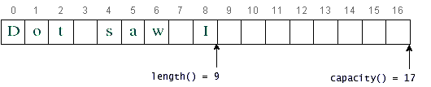
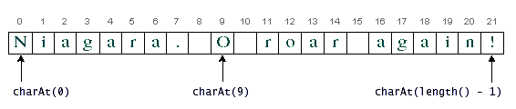
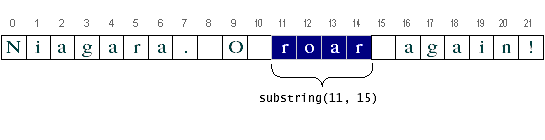

Feedback Form
|
|
Start of Tutorial > Start of Trail > Start of Lesson |
Search
Feedback Form |
Getting the Length of a String or a String Buffer
Methods used to obtain information about an object are known as accessor methods. One accessor method that you can use with both strings and string buffers is thelengthmethod, which returns the number of characters contained in the string or the string buffer. After the following two lines of code have been executed,lenequals 17:In addition toString palindrome = "Dot saw I was Tod"; int len = palindrome.length();length, theStringBufferclass has a method calledcapacity, which returns the amount of space allocated for the string buffer rather than the amount of space used. For example, the capacity of the string buffer referred to bydestin theStringsDemoprogram never changes, although its length increases by 1 for each iteration of the loop. The following figure shows the capacity and the length ofdestafter nine characters have been appended to it. A string buffer's length is the number of characters it contains; a string buffer's capacity is the number of character spaces that have been allocated. TheStringclass doesn't have acapacitymethod, because a string cannot change.Getting Characters by Index from a String or a String Buffer
You can get the character at a particular index within a string or a string buffer by using thecharAtaccessor. The index of the first character is 0; the index of the last islength()-1. For example, the following code gets the character at index 9 in a string:Indices begin at 0, so the character at index 9 is 'O', as illustrated in the following figure:String anotherPalindrome = "Niagara. O roar again!"; char aChar = anotherPalindrome.charAt(9); Use thecharAtmethod to get a character at a particular index. The figure also shows that to compute the index of the last character of a string, you have to subtract 1 from the value returned by thelengthmethod.If you want to get more than one character from a string or a string buffer, you can use the
substringmethod. Thesubstringmethod has two versions, as shown in the following table:
Method Description String substring(int)
String substring(int, int)Returns a new string that is a substring of this string or string buffer.The first integer argument specifies the index of the first character. The second integer argument is the index of the last character -1. The length of the substring is therefore the firstintminus the secondint. If the second integer is not present, the substring extends to the end of the original string.The following code gets from the Niagara palindrome the substring that extends from index 11 to index 15, which is the word "roar":
Use theString anotherPalindrome = "Niagara. O roar again!"; String roar = anotherPalindrome.substring(11, 15);substringmethod to get part of a string or string buffer. Remember that indices begin at 0.
|
|
Start of Tutorial > Start of Trail > Start of Lesson |
Search
Feedback Form |
Copyright 1995-2004 Sun Microsystems, Inc. All rights reserved.